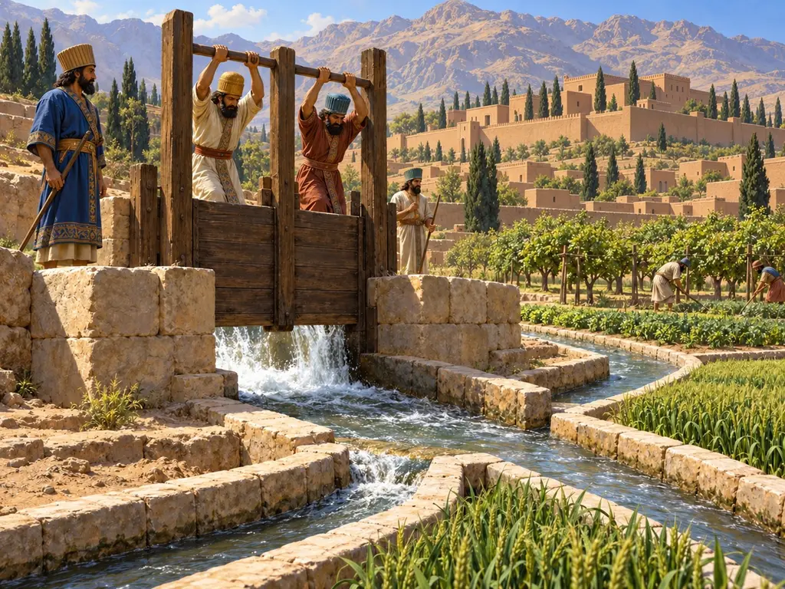
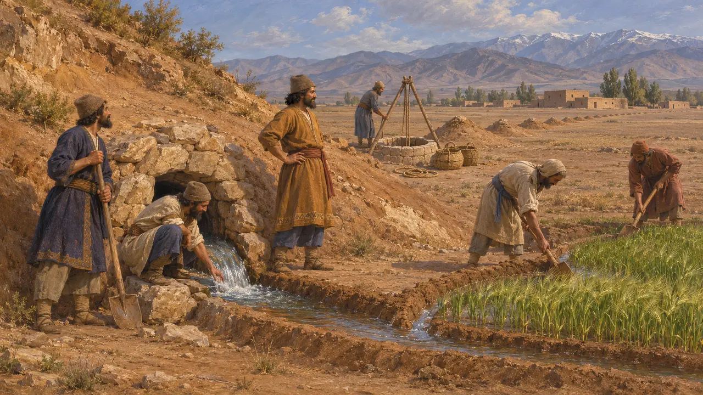
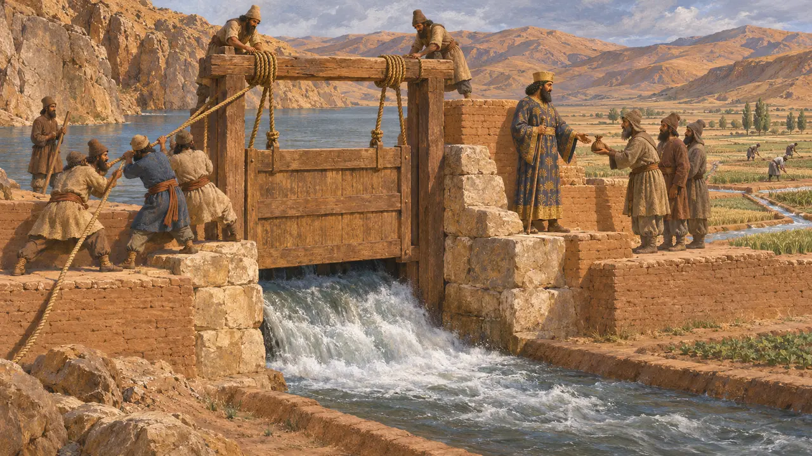
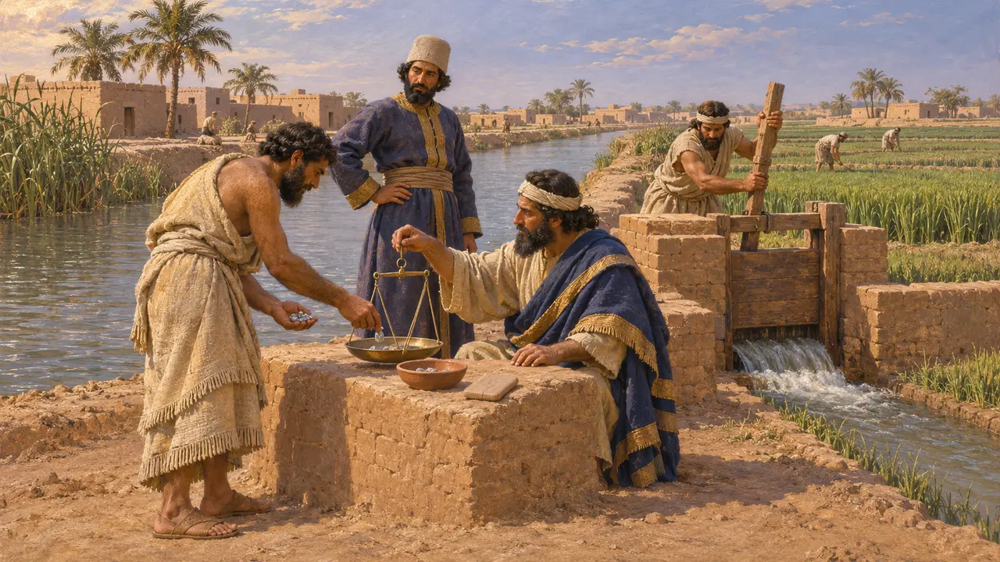
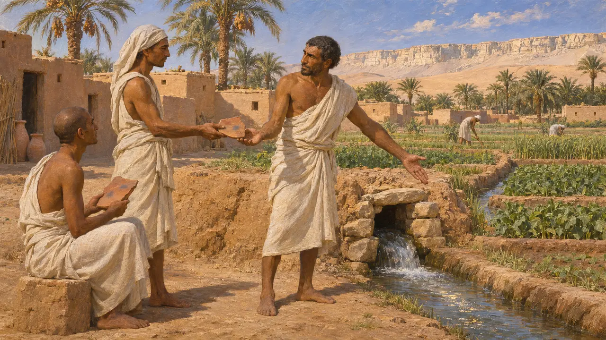
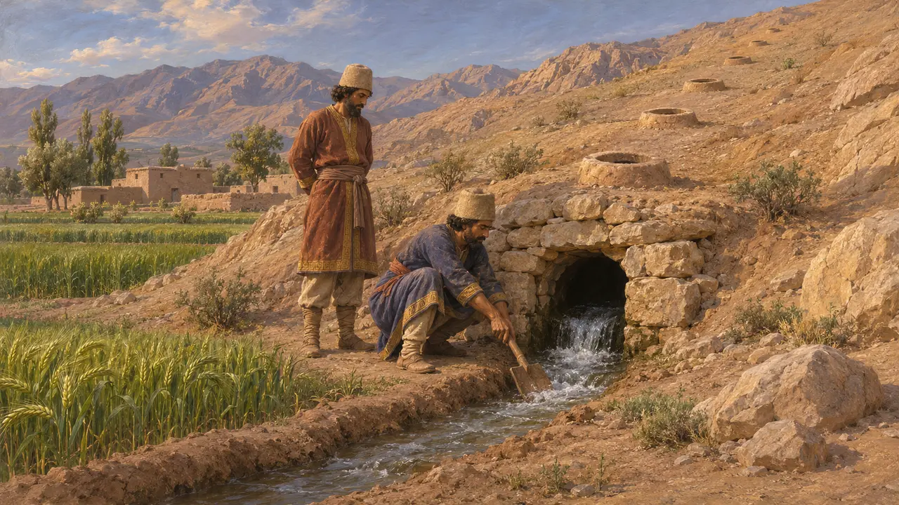

Droits d'eau
Concessions et redevances royales sur l'eau d'irrigation dans l'empire perse, vers 550-330 av. J.-C.
Dans les terres arides que gouvernaient les rois perses, l'eau décidait où les cultures pouvaient pousser. L'historien grec Polybe, écrivant des siècles plus tard, rapporte que les rois accordaient à quiconque amenait l'eau sur une terre non irriguée d'en jouir pendant cinq générations. Des documents achéménides plus tardifs de Babylonie et d'Égypte montrent l'eau louée, partagée et payée. Ensemble, ils laissent penser que la maîtrise de l'eau était l'un des grands moyens par lesquels le gouvernement royal atteignait les simples paysans.
Dans le jeu : Un ordre royal permanent, sur la page Impôts du registre, augmente les récoltes et réduit les redevances. La citation de Polybe 10.28 par le jeu est exacte, mais l'ordre réduit une concession d'usage de la terre à une baisse d'impôt ; les rois faisaient aussi payer l'eau.

La concession sur cinq générations
Récit antiquePolybe, qui écrit au IIe siècle av. J.-C., décrit les conduits souterrains du pays aride qu'Antiochos III traversa lors de sa marche sur l'Hyrcanie, vers 209. Il rapporte qu'au temps où les Perses dominaient l'Asie, ceux qui amenaient l'eau de source sur des terres jusque-là non irriguées en recevaient la jouissance pour cinq générations. Il ajoute que l'on n'épargnait donc ni peine ni dépense pour creuser de longs conduits sous terre.
Polybius 10.28

Le Roi ouvre les vannes
Récit antiqueHérodote évoque une plaine encerclée de collines et arrosée par le fleuve Akès, où le Roi ferma les gorges par des portes, si bien que le fleuve forma un lac. Les peuples d'en bas durent se rendre auprès du Roi en Perse pour implorer de l'eau, et il ne faisait ouvrir les portes que contre un lourd paiement, en sus du tribut. Bien des historiens doutent des détails, mais le récit montre une vision grecque de l'eau comme source de revenus royaux.
Herodotus 3.117

L'affermage de l'eau en Babylonie
Dans les sourcesLes archives des Murashu de Nippur, datées d'environ 440 av. J.-C. à 415 av. J.-C., bien après la période du jeu, documentent une maison familiale qui gérait des terres détenues par des bénéficiaires de concessions royales. Leurs tablettes attestent les redevances versées pour l'eau puisée dans des canaux administrés par des fonctionnaires royaux, et une irrigation organisée par ces gestionnaires. L'eau y était une ressource louée et payée, non un bien libre pour quiconque pouvait l'atteindre.
M. Stolper, Entrepreneurs and Empire, 1985

Jours d'eau dans une oasis égyptienne
Dans les sourcesÀ Ayn Manawir, dans l'oasis de Kharga, des ostraca démotiques du Ve et du début du IVe siècle enregistrent la vente et la location de parts de conduites d'eau souterraines ; certains furent rédigés après que l'Égypte se fut affranchie de la domination perse en 404 av. J.-C. Les droits se comptaient en jours d'écoulement et passaient d'un villageois à l'autre par contrat écrit. Ces textes comptent parmi les témoignages les plus clairs du fonctionnement des droits sur l'eau à cette époque.
M. Chauveau, in P. Briant (ed.), Irrigations et drainages dans l'Antiquité, 2001

Qui diffusa les canaux souterrains
ContestéOn identifie généralement les conduits de Polybe aux qanats, galeries qui amènent l'eau souterraine à la surface. Certains historiens attribuent leur diffusion aux Perses, tandis que d'autres soutiennent qu'ils sont plus anciens par endroits ou ne se sont répandus que plus tard. Polybe écrivant longtemps après les Achéménides, on discute aussi de la mesure dans laquelle cette concession reflète une politique royale générale.
P. Briant, From Cyrus to Alexander, 2002
Sources
- Polybius 10.28
- Herodotus 3.117
- M. Stolper, Entrepreneurs and Empire, 1985
- P. Briant (ed.), Irrigations et drainages dans l'Antiquité: qanâts et canalisations souterraines en Iran, en Égypte et en Grèce, 2001
- P. Briant, From Cyrus to Alexander, 2002